About
REAL Lab is a research group at Zhejiang University building AI that reasons reliably, explores the physical world, acts autonomously, and learns continuously throughout its lifetime, grounded in the real world.
REAL stands for Reasoning, Embodied, Agentic, and Lifelong-learning AI: a research initiative dedicated to building AI systems that reason deeply, explore the physical world, act autonomously as agents, and learn continuously throughout their lifetime, bridging the gap between virtual intelligence and the real world.
We focus on the four core capabilities that lead to real-world intelligence:
- Reasoning gives models the ability to think deeply and solve complex problems, the cognitive foundation of intelligence.
- Embodied takes intelligence off the screen, perceiving and acting on real environments through a physical body.
- Agentic lets systems plan autonomously, call tools, and carry out long-horizon tasks.
- Lifelong lets agents accumulate experience and self-evolve through continuous interaction with their environment.
The four build on one another, thinking, embodiment, action, and growth, pointing to a single goal: general intelligence genuinely grounded in the REAL world.
We work across large language models, multimodal foundation models, agent systems, and embodied AI, with an emphasis on the fundamental capabilities that connect them. We believe the next generation of AI will be defined not by model scale alone, but by how these four pillars come together in a single system.

News
- 2026.10 OPEN SOURCEReleased three works on spatial intelligence in vision-language models: ViSkill (evolving visual-native skills for VLM agents), SpaceCast-Bench (predictive spatial reasoning), and GPD (distilling routed 3D privilege for spatial reasoning).
- 2026.10 OPEN SOURCEReleased WorldMemBench, a comprehensive benchmark for the memory of video world models, with code and the dataset. [paper]
- 2026.09 OPEN SOURCEReleased three works on computer-use agents: HybridCUA (orchestrating GUI and CLI), ComputerSD (online self-distillation from real-time feedback), and Reflect, Revise, Reuse (training-free skill evolution for GUI agents).
- 2026.09 ECCVTwo papers at ECCV 2026: ViewSpatial-Bench on multi-perspective spatial localization, and Learning from Reliable Negatives on test-time adaptation for GUI grounding.
- 2026.08 OPEN SOURCEReleased PaperGym (rubric-centered evolution for research-plan generation) and TTPO (test-time policy optimization).
- 2026.08 EMNLPTen papers accepted to EMNLP 2026 (6 Main Conference, 3 Findings, 1 System Demonstration), spanning agentic reinforcement learning, deep research and code agents, retrieval-augmented generation, and multimodal reasoning. EasySteer was accepted to the System Demonstrations track.
- 2026.05 TALKYongliang Shen gave a tutorial at VALSE 2026 (Wuhan): 从推理到行动：Agentic AI 的关键技术与前沿应用. [slides]
- 2026.04 ICMLFour papers accepted to ICML 2026, spanning long-horizon reasoning, language agents, multilingual evaluation, and multimodal understanding.
- 2026.04 LAUNCHREAL Lab website goes live. We are recruiting PhD students, master's students, and research interns; see Join Us.
- 2026.04 OPEN SOURCEReleased ClawGUI, a unified open-source framework for training, evaluating, and deploying GUI agents. [paper]
- 2026.04 ACLTen papers accepted to ACL 2026 (8 Main Conference, 2 Findings), spanning GUI agents, reasoning, reinforcement learning, and multimodal models.
- 2026.02 CVPRGUI-SAGE: Enhancing GUI Automation with Self-Explanatory Learning accepted to CVPR 2026.
- 2026.02 ICLRSix papers accepted to ICLR 2026: InftyThink, VerifyBench, MathFimer, Time Is a Feature, IWR-Bench, and SpatialLadder, spanning reasoning, reward modeling, diffusion LMs, and multimodal evaluation.
- 2025.12 AAAIFour papers accepted to AAAI 2026: GUI-G², Test-Time RL for GUI Grounding, Reality vs Counterfactual (Theory of Mind), and more, spanning GUI agents, reasoning, and multimodal understanding.
- 2025.10 OPEN SOURCEReleased EasySteer, a unified open-source framework for high-performance and extensible LLM steering. [paper]
- 2025.09 EMNLPMultiple papers accepted at EMNLP 2025: AskToAct (main), Logic (Findings), DB-Explore (Findings).
- 2025.07 ACM MMSVGenius, a benchmark for LLMs in SVG understanding, editing, and generation, accepted to ACM Multimedia 2025.
- 2025.05 ACLSTaR-SQL accepted to ACL 2025; Scaling LLMs' Social Reasoning to ACL Findings.
- 2025.03 PREPRINTReleased Embodied-Reasoner, synergizing visual search, reasoning, and action for embodied interactive tasks.
- 2024.09 NeurIPSTaskBench: Benchmarking LLMs for Task Automation accepted to NeurIPS 2024 (Datasets and Benchmarks Track).